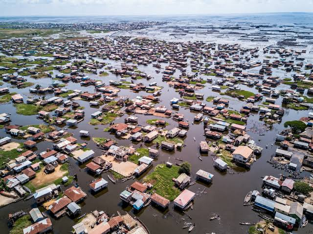
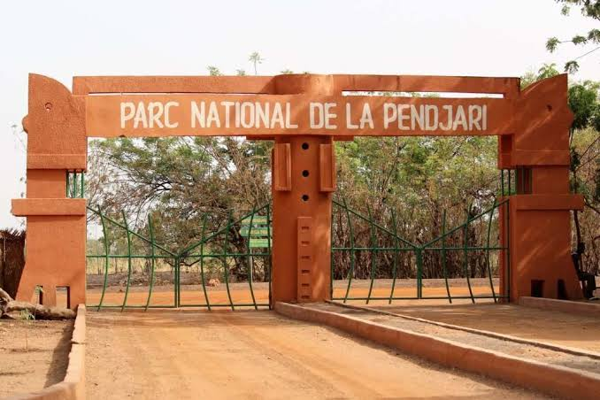

Cotonou
Experience the city's energy, lively markets, local food, and Atlantic coastline.
Learn MoreWelcome to Benin
From Atlantic beaches to royal palaces, discover Benin's beautiful landscapes, rich traditions, and hidden treasures.
Explore DestinationsBenin invites you to discover fascinating history, vibrant culture, delicious cuisine, and remarkable natural landscapes. Start planning your adventure with Benin Explorer.
Experience the city's energy, lively markets, local food, and Atlantic coastline.
Learn More

Culture, nature, heritage, and unforgettable encounters: find experiences that inspire you.
Explore Activities